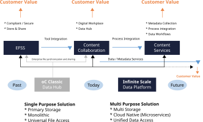
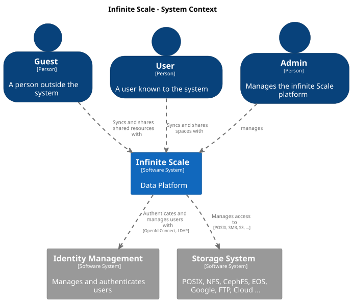
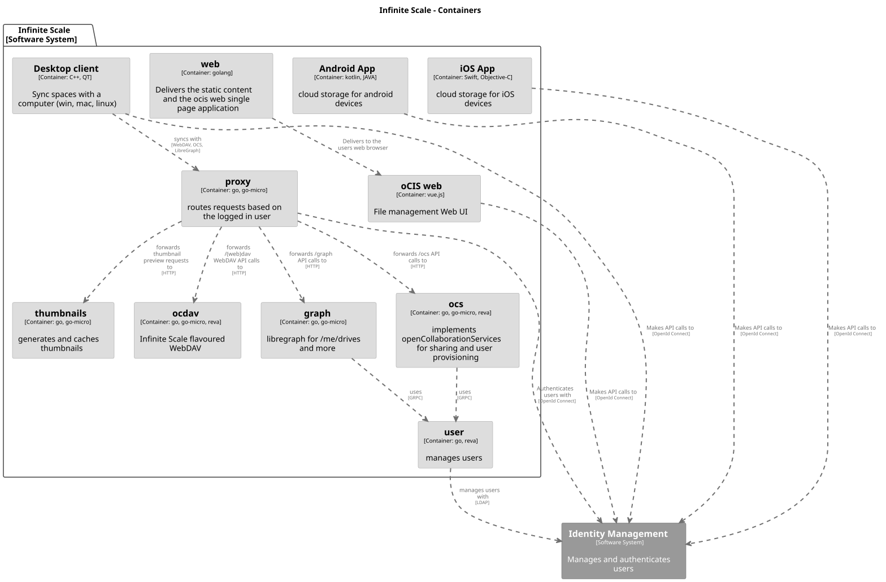
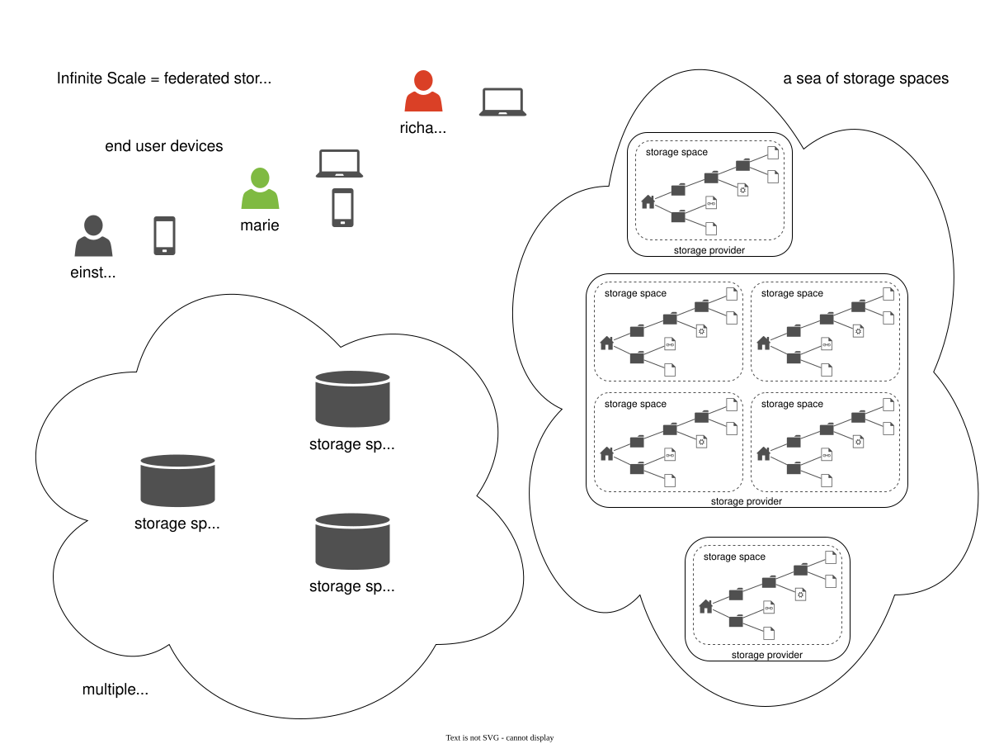

Architecture and Concepts of Infinite Scale
Introduction
This page gives you an overview of the architecture and the concepts behind Infinite Scale. Infinite Scale was designed from the beginning as a data platform providing tools to integrate, organize, share and govern data and metadata.
These topics have always been kept in mind during the development of Infinite Scale:
-
data platform
-
unified data access
-
cloud data ecosystems
-
support of the customers data strategy
Architecture Overview
Looking at the image below, you see that the state of classic file sharing is not sufficient for today’s requirements and the trend clearly heads toward services around data and metadata. Iron-cast structures do not allow for additional value that could be created out of data and metadata. Services available to clients like end users or management have to be able to follow different and dynamic requirements. This is the basis of the Infinite Scale architecture.

C4 Model
We use the C4 model to visualise the software architecture of Infinite Scale.
The C4 model is a lean graphical notation technique for modelling the architecture of software systems. It is based on a structural decomposition of a system into containers and components and relies on existing modelling techniques such as the Unified Modelling Language (UML) or Entity Relation Diagrams (ERD) for the more detailed decomposition of the architectural building blocks.
Use this link to download the Infinite Scale C4 Model raw description file.


Concepts
Functional Concepts
Spaces
Spaces are a logical concept. They organize a set of resources in a hierarchical tree. Here are some key features:
-
Internally, a space is identified by a unique
storage space IDand displayed to users by a given name. -
A space has no owner, though one or more users can be assigned to manage a space.
-
Access to a space is granted via roles assigned to users, groups and guests like member, manager etc.
-
Each space can have an individual:
-
Description
-
Image
-
Quota
-
-
A storage spaces registry then allows listing the capabilities of storage spaces, e.g. free space, quota, managers, syncable, root ETag etc.
-
Spaces may serve different purposes like every user’s personal storage space, project, group or school class storage spaces including shares and reshares.
-
A space makes it much easier to separate data that can be shared and data that should not be shared. As an example, although you can share content in your personal space, it is much more secure to have a dedicated space for sharing and keep your personal space for your eyes only.
-
Spaces have a small memory footprint and are therefore very effective. For details see the RAM Considerations.
For detailed information on the implementation of spaces, check out the Developer Guide.
Federated Storage
To create a truly federated storage architecture, Infinite Scale breaks down the ownCloud 10 user-specific namespace, which is assembled on the server side, and makes the individual parts accessible to clients as storage spaces and storage space registries.
The diagram below shows the core concepts of the new architecture:
-
End-user devices can fetch the list of storage spaces a user has access to by querying one or multiple storage space registries. The list contains a unique endpoint for every storage space.
-
Storage space registries manage the list of storage spaces a user has access to. They may subscribe to storage spaces in order to receive notifications about changes on behalf of an end-user’s mobile or desktop client.
-
Storage spaces represent a collection of files and folders. A user’s personal files are contained in a storage space. A group or project drive is a storage space. Even incoming shares are treated and implemented as storage spaces, each with properties like owners, permissions, quota and type.
-
Storage providers can hold multiple storage spaces. On an Infinite Scale instance, there might be a dedicated storage provider responsible for users' personal storage spaces. There might be multiple storage providers, either to shard the load, provide different levels of redundancy or support custom workflows. Or there might be just one, hosting all types of storage spaces.

For example, Einstein wants to share something with Marie, who has an account at a different identity provider and uses a different storage space registry. OpenID Connect (OIDC) is used for authentication.
-
Einstein opens
https://cloud.zurich.test. His browser loads Infinite Scale Web and presents a login form that uses OpenID Connect Discovery to look up the OIDC issuer. Foreinstein@zurich.test, he will end up athttps://idp.zurich.test, authenticate and get redirected back tohttps://cloud.zurich.test. -
Now, Infinite Scale Web will use a similar discovery to look up the storage space registry for the account based on the email address (or username). He will discover that
https://cloud.zurich.testis also his storage registry which the Web UI will use to load the list of storage spaces available to him. -
After locating a folder that Einstein wants to share with Marie, he enters her email address
marie@paris.testin the sharing dialog to grant her the editor role. This, in effect, creates a new storage space that is registered with the storage space registry athttps://cloud.zurich.test. -
Einstein copies the URL in the browser (or an email with the same URL is sent automatically, or the storage registries use a back-channel mechanism). It contains the most specific storage space ID and a path relative to it:
https://cloud.zurich.test/#/spaces/716199a6-00c0-4fec-93d2-7e00150b1c84/a/rel/path. -
When Marie enters that URL, she will be presented with a login form on the
https://cloud.zurich.testinstance, because the share was created on that domain. -
If
https://cloud.zurich.testtrusts her OpenID Connect identity providerhttps://idp.paris.test, she can log in. -
This time, the storage space registry discovery will come up with
https://cloud.paris.testthough. Since that registry is different than the registry tied tohttps://cloud.zurich.test, Infinite Scale Web can look up the storage space716199a6-00c0-4fec-93d2-7e00150b1c84and register the WebDAV URL\https:/cloud.zurich.test/dav/spaces/716199a6-00c0-4fec-93d2-7e00150b1c84/a/rel/pathin Marie`s storage space registry athttps://cloud.paris.test. -
When Marie accepts that share, her clients will be able to sync the new storage space at
https://cloud.zurich.test.
Runtime Concepts
Infinite Scale Microservice Runtime
Infinite Scale runtime allows us to dynamically manage services running in a single process. We use suture to create a supervisor tree that starts each service in a dedicated Go routine. By default, Infinite Scale will start all built-in Infinite Scale services in a single process. Individual services can be moved to other nodes to scale out and meet specific performance requirements. A go-micro-based registry allows services in multiple nodes to form a distributed microservice architecture.
Infinite Scale Services
Every Infinite Scale service uses ocis-pkg, which implements the go-micro interfaces for servers to register and clients to look up nodes with a service registry. We are following the 12-factor methodology with Infinite Scale. The uniformity of services also allows us to use the same mechanism for commands, logging and configuration. Configurations are forwarded from the Infinite Scale runtime to the individual services.
Go-Micro
While the go-micro framework provides abstractions as well as implementations for the different components in a microservice architecture, it uses a more developer-focused runtime philosophy: It is used to download services from a repo, compile them on the fly and start them as individual processes. For Infinite Scale we decided to use a more admin-friendly runtime: You can download a container that internally uses a single binary, which starts the contained Infinite Scale services with a single command: ocis server. This also makes packaging easier.
REVA and CS3
A lot of embedded services in Infinite Scale are built on the REVA runtime. Reva is the CS3 API reference implementation. We decided to bundle some of the CS3 services to logically group them. A home storage provider, which is dealing with metadata, and the corresponding data provider, which is dealing with uploads and downloads, are one example. The frontend with the oc-flavoured WebDAV, OCS handlers and a data gateway are another.
CS3 (Cloud Storage Services for Synchronization and Sharing) is based on GRPC (open source high performance Remote Procedure Call (RPC) framework) which uses a binary-coded versionable payload protocol with much higher efficiency when it comes to parsing compared to a classical XML payload.
Protocol-Driven Development
Interacting with Infinite Scale involves a multitude af APIs. The server and all clients rely on OpenID Connect for authentication. The embedded LibreGraph Connect can be replaced with any other OpenID Connect Identity Provider. Clients use the WebDAV-based ownCloud sync protocol to manage files and folders, Open Collaboration Services (OCS) to manage shares and TUS to upload files in a resumable way. On the server side, REVA is the reference implementation of the CS3APIS, which are defined using protocol buffers. By embedding Go-lang LDAP Authentication (GLAuth), Infinite Scale provides a read-only LDAP interface to make accounts, including guests, available to firewalls and other systems.